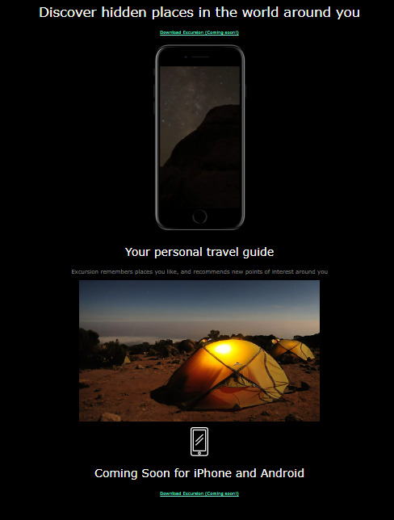

Welcome to My Portfolio Site!
This is the home page to my personal portfolio website. You can either use the navigation up top or the sections below to decide where you'd like to go! My portfolio is ever growing as I better myself at software engineering, so you'll be able to see how my skill changes over time.
About Me
Click Here to go to my "About Me" page, where I explain my work experience and skills learned up until now.
My Projects
Click Here to go to the "Projects" page, where I've displayed all of my current completed projects. I also give descriptions of what they are, the purpose of them (if any), and if done with a team, will add who I completed it with.